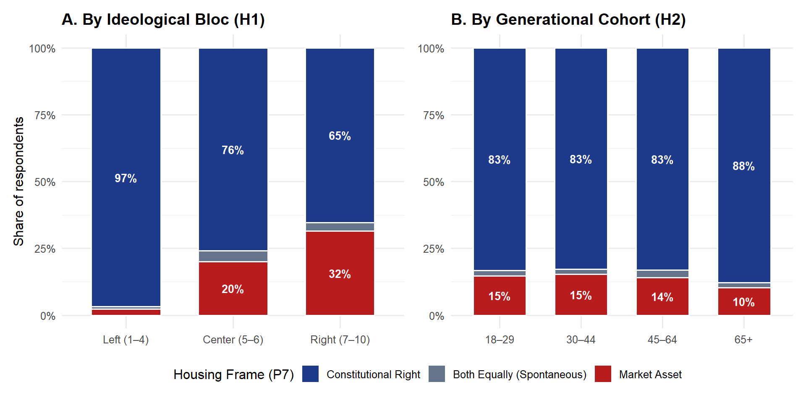
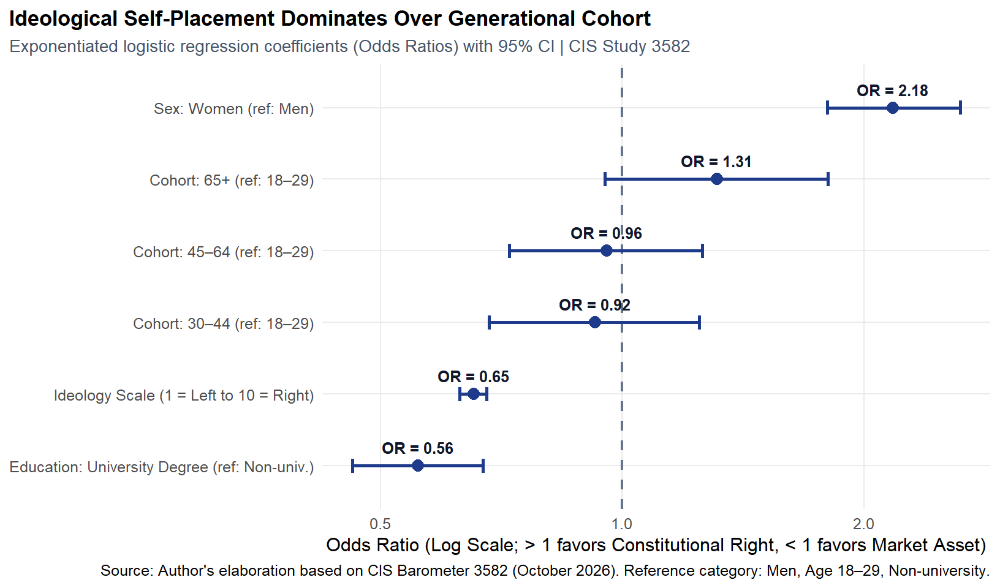

Code
library(tidyverse)
library(haven)
library(janitor)
library(scales)
library(knitr)
# Load raw SPSS microdata
raw_cis <- read_sav("3582.sav")Invalid date string (length=9): 22 001 26Empirical Analysis of the CIS Barometer (Study No. 3582, October 2026)
Access to housing has consolidated as one of the primary axes of distributive conflict in contemporary Spain. Following the media impact of the eviction of Maricarmen (“el caso del desahucio de Maricarmen”) and the approval of two urgent housing decrees by the Spanish Government on September 29, 2026, public debate has crystallized around two competing frames: housing as a constitutional social right versus housing as a market asset governed by legal certainty.
This study investigates two core sociological hypotheses using microdata from the Centro de Investigaciones Sociológicas (CIS, Study No. 3582):
P7) are primarily structured along the left-right ideological continuum (ESCIDEOL).EDAD), facing structural barriers to emancipation, exhibit significantly higher support for interventionist housing policies (P7 and P4A) than older property-owning cohorts, partially cross-cutting traditional ideological alignments.The dataset corresponds to the October 2026 CIS Barometer (3582.sav), a nationally representative survey of the adult population residing in Spain. To ensure analytical transparency, raw SPSS labelled variables are inspected, missing values (No sabe / No contesta, typically coded as 98 or 99) are explicitly recoded as NA, and continuous variables are operationalized into theoretically grounded sociological categories.
library(tidyverse)
library(haven)
library(janitor)
library(scales)
library(knitr)
# Load raw SPSS microdata
raw_cis <- read_sav("3582.sav")Invalid date string (length=9): 22 001 26Following standard quantitative sociology protocols, non-substantive responses (N.S., N.C., and N.P. filter skips) are recoded as NA. To test our hypotheses, we construct:
housing_frame from P7): Contrasts the Constitutional Right frame (1) against the Market Asset frame (2), while retaining the spontaneous Both equally (3) category for descriptive completeness and creating a binary indicator (right_frame_bin: 1 = Constitutional right vs. 0 = Market asset) for logistic modeling.ideology_bloc from ESCIDEOL): The 1–10 left-right self-placement scale is grouped into Left (1–4), Center (5–6), and Right (7–10).cohort from EDAD): Grouped into four life-course stages reflecting differential exposure to the housing market: 18–29 (Blocked emancipation), 30–44 (Household formation), 45–64 (Consolidation), and 65+ (Senior homeowners).cis_clean <- raw_cis %>%
mutate(
# 1. Housing Frame (P7)
housing_frame = case_when(
P7 == 1 ~ "Constitutional Right",
P7 == 2 ~ "Market Asset",
P7 == 3 ~ "Both Equally (Spontaneous)",
TRUE ~ NA_character_
) %>% factor(levels = c("Constitutional Right", "Both Equally (Spontaneous)", "Market Asset")),
# Binary outcome for P7 (excluding spontaneous middle category to isolate pure frames)
right_frame_bin = case_when(
P7 == 1 ~ 1,
P7 == 2 ~ 0,
TRUE ~ NA_real_
),
# 2. Evaluation of Sept 29 Housing Decrees (P4A - filtered to informed respondents)
decrees_eval = case_when(
P4A %in% c(1, 2) ~ "Positive (Very/Fairly)",
P4A == 3 ~ "Neutral (Spontaneous)",
P4A %in% c(4, 5) ~ "Negative (Very/Fairly)",
TRUE ~ NA_character_
) %>% factor(levels = c("Positive (Very/Fairly)", "Neutral (Spontaneous)", "Negative (Very/Fairly)")),
# 3. Ideological Self-Placement (ESCIDEOL: 1-10)
ideol_num = ifelse(ESCIDEOL >= 1 & ESCIDEOL <= 10, as.numeric(ESCIDEOL), NA_real_),
ideology_bloc = case_when(
ideol_num %in% 1:4 ~ "Left (1–4)",
ideol_num %in% 5:6 ~ "Center (5–6)",
ideol_num %in% 7:10 ~ "Right (7–10)",
TRUE ~ NA_character_
) %>% factor(levels = c("Left (1–4)", "Center (5–6)", "Right (7–10)")),
# 4. Generational Cohorts (EDAD)
cohort = case_when(
EDAD >= 18 & EDAD <= 29 ~ "18–29",
EDAD >= 30 & EDAD <= 44 ~ "30–44",
EDAD >= 45 & EDAD <= 64 ~ "45–64",
EDAD >= 65 & EDAD <= 99 ~ "65+",
TRUE ~ NA_character_
) %>% factor(levels = c("18–29", "30–44", "45–64", "65+")),
# 5. Control variables: Sex & Education
sex = case_when(
SEXO == 1 ~ "Men",
SEXO == 2 ~ "Women",
TRUE ~ NA_character_
) %>% factor(),
university = case_when(
ESTUDIOS == 6 ~ "University degree",
ESTUDIOS %in% 1:5 ~ "Non-university",
TRUE ~ NA_character_
) %>% factor(),
weight = as.numeric(PESOCCAA)
)To evaluate whether housing preferences depend significantly on ideology (\(H_1\)) and generational cohort (\(H_2\)), we compute cross-tabulations with row percentages, Pearson’s Chi-square (\(\chi^2\)) tests of independence, and Cramér’s \(V\) to measure association strength (effect size).
# Helper function to compute Chi-square and Cramér's V cleanly
calc_assoc <- function(var_x, var_y) {
tbl <- table(var_x, var_y)
chi <- chisq.test(tbl)
n <- sum(tbl)
min_dim <- min(nrow(tbl) - 1, ncol(tbl) - 1)
cramers_v <- sqrt(chi$statistic / (n * min_dim))
tibble(
Chi_Square = round(as.numeric(chi$statistic), 2),
df = chi$parameter,
p_value = ifelse(chi$p.value < 0.001, "< 0.001", as.character(round(chi$p.value, 4))),
Cramers_V = round(as.numeric(cramers_v), 3)
)
}
assoc_summary <- bind_rows(
calc_assoc(cis_clean$ideology_bloc, cis_clean$housing_frame) %>% mutate(Comparison = "Ideology Bloc × Housing Frame (P7)"),
calc_assoc(cis_clean$cohort, cis_clean$housing_frame) %>% mutate(Comparison = "Generational Cohort × Housing Frame (P7)"),
calc_assoc(cis_clean$ideology_bloc, cis_clean$decrees_eval) %>% mutate(Comparison = "Ideology Bloc × Decrees Eval (P4A)"),
calc_assoc(cis_clean$cohort, cis_clean$decrees_eval) %>% mutate(Comparison = "Generational Cohort × Decrees Eval (P4A)")
) %>% select(Comparison, Chi_Square, df, p_value, Cramers_V)
kable(assoc_summary, caption = "Table 1. Bivariate Association Tests (Pearson's Chi-Square & Cramér's V)")| Comparison | Chi_Square | df | p_value | Cramers_V |
|---|---|---|---|---|
| Ideology Bloc × Housing Frame (P7) | 644.39 | 4 | < 0.001 | 0.262 |
| Generational Cohort × Housing Frame (P7) | 18.33 | 6 | 0.0055 | 0.044 |
| Ideology Bloc × Decrees Eval (P4A) | 1521.77 | 4 | < 0.001 | 0.440 |
| Generational Cohort × Decrees Eval (P4A) | 47.20 | 6 | < 0.001 | 0.077 |
p1_ideol <- cis_clean %>%
filter(!is.na(ideology_bloc), !is.na(housing_frame)) %>%
count(ideology_bloc, housing_frame) %>%
group_by(ideology_bloc) %>%
mutate(pct = n / sum(n)) %>%
ggplot(aes(x = ideology_bloc, y = pct, fill = housing_frame)) +
geom_col(width = 0.65, color = "white") +
geom_text(aes(label = ifelse(pct >= 0.06, percent(pct, accuracy = 1), "")),
position = position_stack(vjust = 0.5), color = "white", fontface = "bold", size = 3.5) +
scale_y_continuous(labels = percent_format()) +
scale_fill_manual(values = c("#1E3A8A", "#64748B", "#B91C1C")) +
labs(title = "A. By Ideological Bloc (H1)", x = NULL, y = "Share of respondents", fill = "Housing Frame (P7)") +
theme_minimal(base_size = 12) +
theme(legend.position = "bottom", plot.title = element_text(face = "bold"))
p2_cohort <- cis_clean %>%
filter(!is.na(cohort), !is.na(housing_frame)) %>%
count(cohort, housing_frame) %>%
group_by(cohort) %>%
mutate(pct = n / sum(n)) %>%
ggplot(aes(x = cohort, y = pct, fill = housing_frame)) +
geom_col(width = 0.65, color = "white") +
geom_text(aes(label = ifelse(pct >= 0.06, percent(pct, accuracy = 1), "")),
position = position_stack(vjust = 0.5), color = "white", fontface = "bold", size = 3.5) +
scale_y_continuous(labels = percent_format()) +
scale_fill_manual(values = c("#1E3A8A", "#64748B", "#B91C1C")) +
labs(title = "B. By Generational Cohort (H2)", x = NULL, y = NULL, fill = "Housing Frame (P7)") +
theme_minimal(base_size = 12) +
theme(legend.position = "bottom", plot.title = element_text(face = "bold"))
# Combine both panels side by side using patchwork or gridExtra
library(patchwork)
(p1_ideol + p2_cohort) + plot_layout(guides = "collect") & theme(legend.position = "bottom")
ggsave("fig1_bivariate_cleavages.png", width = 10, height = 5, dpi = 300, bg = "white")
The bivariate tests in Table 1 reveal a striking empirical asymmetry between our two hypotheses:
Bivariate associations can mask confounding effects (for instance, if younger cohorts skew slightly more progressive than older cohorts). To isolate the net effect of age and ideology while controlling for gender and educational attainment, we estimate a binary logistic regression model:
\[\log\left(\frac{P(\text{Constitutional Right} = 1)}{1 - P(\text{Constitutional Right} = 1)}\right) = \beta_0 + \beta_1 \text{Ideology} + \beta_2 \text{Cohort} + \beta_3 \text{Sex} + \beta_4 \text{University}\]
Here, the dependent variable (right_frame_bin) equals 1 if the respondent prioritizes “El derecho a la vivienda como un derecho constitucional” and 0 if they prioritize “La vivienda como bien de mercado”. Coefficients are exponentiated into Odds Ratios (\(OR = e^{\beta}\)) with 95% confidence intervals.
library(broom)
# Fit binary logistic regression model
logit_model <- glm(
right_frame_bin ~ ideol_num + cohort + sex + university,
data = cis_clean,
family = binomial(link = "logit")
)
# Tidy output with Odds Ratios and 95% Confidence Intervals
logit_table <- tidy(logit_model, conf.int = TRUE, exponentiate = TRUE) %>%
filter(term != "(Intercept)") %>%
mutate(
Predictor = case_when(
term == "ideol_num" ~ "Ideology Scale (1 = Left to 10 = Right)",
term == "cohort30–44" ~ "Cohort: 30–44 (ref: 18–29)",
term == "cohort45–64" ~ "Cohort: 45–64 (ref: 18–29)",
term == "cohort65+" ~ "Cohort: 65+ (ref: 18–29)",
term == "sexWomen" ~ "Sex: Women (ref: Men)",
term == "universityUniversity degree" ~ "Education: University Degree (ref: Non-univ.)"
),
OR = round(estimate, 3),
CI_95 = paste0("[", round(conf.low, 3), ", ", round(conf.high, 3), "]"),
p_val = ifelse(p.value < 0.001, "< 0.001", as.character(round(p.value, 4)))
)
kable(
logit_table %>% select(Predictor, OR, CI_95, p_val),
caption = "Table 2. Binary Logistic Regression Predicting 'Constitutional Right' Frame (P7 = 1 vs. 0)"
)| Predictor | OR | CI_95 | p_val |
|---|---|---|---|
| Ideology Scale (1 = Left to 10 = Right) | 0.653 | [0.628, 0.678] | < 0.001 |
| Cohort: 30–44 (ref: 18–29) | 0.924 | [0.682, 1.248] | 0.6094 |
| Cohort: 45–64 (ref: 18–29) | 0.957 | [0.724, 1.258] | 0.756 |
| Cohort: 65+ (ref: 18–29) | 1.312 | [0.952, 1.806] | 0.0963 |
| Sex: Women (ref: Men) | 2.175 | [1.8, 2.636] | < 0.001 |
| Education: University Degree (ref: Non-univ.) | 0.557 | [0.461, 0.671] | < 0.001 |
Figure 2. Determinants of Prioritizing Housing as a Constitutional Right (Logistic Regression Odds Ratios)
# Forest plot of Odds Ratios
ggplot(logit_table, aes(x = estimate, y = reorder(Predictor, estimate))) +
geom_vline(xintercept = 1, linetype = "dashed", color = "#64748B", linewidth = 0.8) +
geom_errorbarh(aes(xmin = conf.low, xmax = conf.high), height = 0.2, color = "#1E3A8A", linewidth = 0.9) +
geom_point(size = 3.2, color = "#1E3A8A") +
geom_text(aes(label = sprintf("OR = %.2f", estimate)), vjust = -1, size = 3.4, fontface = "bold", color = "#0F172A") +
scale_x_log10() +
labs(
title = "Ideological Self-Placement Dominates Over Generational Cohort",
subtitle = "Exponentiated logistic regression coefficients (Odds Ratios) with 95% CI | CIS Study 3582",
x = "Odds Ratio (Log Scale; > 1 favors Constitutional Right, < 1 favors Market Asset)",
y = NULL,
caption = "Source: Author's elaboration based on CIS Barometer 3582 (October 2026). Reference category: Men, Age 18–29, Non-university."
) +
theme_minimal(base_size = 11.5) +
theme(
plot.title.position = "plot",
plot.caption.position = "plot",
plot.title = element_text(face = "bold", size = 13),
plot.subtitle = element_text(size = 10.5, color = "#475569"),
panel.grid.minor = element_blank()
)
ggsave("fig2_logistic_odds_ratios.png", width = 8.5, height = 5, dpi = 300, bg = "white")Because telephone and online survey samples in Spain frequently over-represent respondents with higher educational attainment, the CIS provides a post-stratification weight variable (PESO, calibrated by education). To verify that our findings are not driven by sampling composition, we re-estimate our logistic regression using quasibinomial(link = "logit") with survey weights (weights = weight) and compare the weighted Odds Ratios against our baseline unweighted model.
# Fit survey-weighted logistic regression (quasibinomial avoids non-integer weight warnings)
logit_weighted <- glm(
right_frame_bin ~ ideol_num + cohort + sex + university,
data = cis_clean,
weights = weight,
family = quasibinomial(link = "logit")
)
# Compare unweighted vs. weighted Odds Ratios side by side
comp_models <- bind_rows(
tidy(logit_model, conf.int = TRUE, exponentiate = TRUE) %>% mutate(Model = "Unweighted Baseline"),
tidy(logit_weighted, conf.int = TRUE, exponentiate = TRUE) %>% mutate(Model = "CIS-Weighted (PESOCCA)")
) %>%
filter(term != "(Intercept)") %>%
mutate(
Predictor = case_when(
term == "ideol_num" ~ "Ideology Scale (1–10)",
term == "cohort30–44" ~ "Cohort: 30–44 (ref: 18–29)",
term == "cohort45–64" ~ "Cohort: 45–64 (ref: 18–29)",
term == "cohort65+" ~ "Cohort: 65+ (ref: 18–29)",
term == "sexWomen" ~ "Sex: Women (ref: Men)",
term == "universityUniversity degree" ~ "Education: University Degree"
),
Result = sprintf("%.2f [%.2f, %.2f]", estimate, conf.low, conf.high)
) %>%
select(Predictor, Model, Result) %>%
pivot_wider(names_from = Model, values_from = Result)
kable(
comp_models,
caption = "Table 3. Robustness Check: Unweighted vs. Post-Stratification Weighted Odds Ratios (95% CI)"
)| Predictor | Unweighted Baseline | CIS-Weighted (PESOCCA) |
|---|---|---|
| Ideology Scale (1–10) | 0.65 [0.63, 0.68] | 0.66 [0.63, 0.68] |
| Cohort: 30–44 (ref: 18–29) | 0.92 [0.68, 1.25] | 0.95 [0.70, 1.28] |
| Cohort: 45–64 (ref: 18–29) | 0.96 [0.72, 1.26] | 1.00 [0.76, 1.30] |
| Cohort: 65+ (ref: 18–29) | 1.31 [0.95, 1.81] | 1.34 [1.00, 1.81] |
| Sex: Women (ref: Men) | 2.18 [1.80, 2.64] | 2.05 [1.70, 2.47] |
| Education: University Degree | 0.56 [0.46, 0.67] | 0.54 [0.45, 0.65] |
Empirical evidence from CIS Study No. 3582 demonstrates that public opinion regarding the Spanish housing crisis is structurally polarized along ideological lines rather than generational ones:
ESCIDEOL) substantially reduces the odds of viewing housing as a constitutional right over a market asset, net of age, gender, and education.